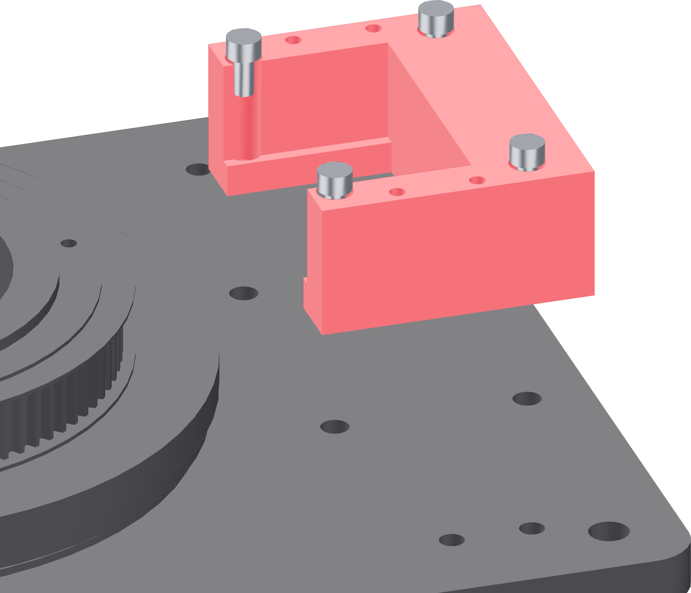

Bolt down the motor tower
Two rails and a rear wall, on the base's four M5 stations. It goes on now; the carriage stays off it until the motor is bolted to the carriage.

- Set the tower on its four stations, rails upward, rear wall away from the tube.
- Drop four M5 × 10 socket-head screws down the tower's own access holes and start each in its insert.
- Tighten with the 4 mm hex down the access holes, opposite corners first. These land in brass inserts — hand-tight and no more.
- Push the tower sideways with a hand. It should not move at all.
Leave the carriage off
The next two steps happen at the bench, off the fixture: the pulley goes on the shaft, then the motor bolts to the carriage. Once the carriage's arms are on these rails, the tower's rear wall stands under the motor's two countersinks and no driver reaches them.